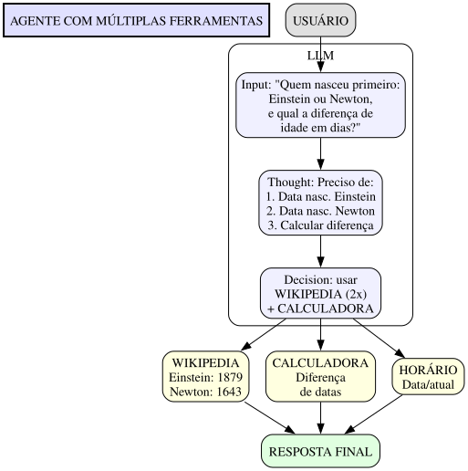
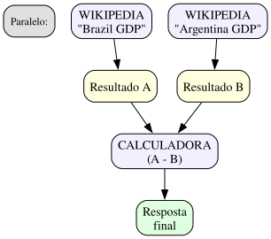
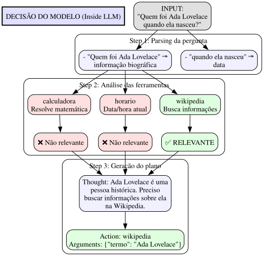
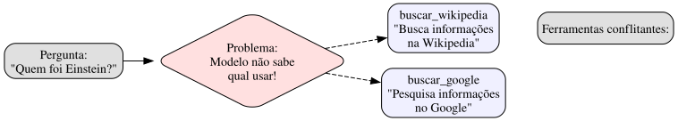
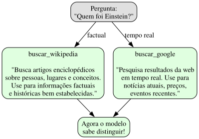

O desafio
Um agente com uma ferramenta já é útil. Mas e com várias?
O modelo precisa escolher qual usar, e às vezes combinar resultados de múltiplas ferramentas.

Paradigmas de Orquestração
1. Orquestração Sequencial
Executar ferramentas uma após outra, usando o resultado da anterior para a próxima.
Pergunta: "Qual a idade de Einstein hoje?"
Sequência:
1. WIKIPEDIA("Albert Einstein birth date") → 1879
2. HORARIO("current year") → 2025
3. CALCULADORA("2025 - 1879") → 146 anos (se estivesse vivo)
4. Resposta: "Einstein nasceu em 1879, teria 146 anos hoje."
2. Orquestração Paralela
Executar ferramentas independentes simultaneamente.

3. Orquestração Condicional
Usar resultado de uma ferramenta para decidir qual usar depois.
Pergunta: "Qual é o dobro da população da capital da França?"
Fluxo:
1. WIKIPEDIA("capital of France") → "Paris"
2. WIKIPEDIA("Paris population") → 2161000
3. CALCULADORA("2161000 * 2") → 4322000
4. Resposta: "O dobro da população de Paris é 4.322.000."
Referências Importantes
Paper: Gorilla
Título: "Gorilla: Large Language Model Connected to Massive APIs" Autores: Shishir Patil, Tianjun Zhang, Xin Wang, Joseph E. Gonzalez Ano: 2023 Link: arXiv:2305.15334
Paper: ReAct
Título: "ReAct: Synergistic Reasoning and Acting in Language Models" Autores: Shunyu Yao, et al. Ano: 2022
Como o modelo decide
O modelo lê todas as descrições e compara com a pergunta.

O problema das descrições vagas
Se duas ferramentas parecem fazer a mesma coisa, o modelo confunde.
Exemplo de Conflito

Solução: Descrições Específicas

Agora o modelo sabe distinguir!
Implementação
Registro de Ferramentas
from typing import Callable, Dict, List, Any # ============================================ # FERRAMENTAS COM DICIONÁRIOS E FUNÇÕES # ============================================ def criar_ferramenta( nome: str, descricao: str, funcao: Callable, parametros: Dict[str, Dict[str, Any]] = None ) -> Dict: """ Cria uma ferramenta como dicionário. Args: nome: Nome único da ferramenta descricao: O que a ferramenta faz (para o LLM entender) funcao: Função Python que será executada parametros: Dict com descrição dos parâmetros Returns: Dicionário representando a ferramenta """ return { "nome": nome, "descricao": descricao, "funcao": funcao, "parametros": parametros or {} } def gerar_descricao_ferramenta(ferramenta: Dict) -> str: """Gera descrição para o prompt do modelo.""" params_desc = "\n".join( f" - {name}: {info.get('description', '')} " f"({'obrigatório' if info.get('required') else 'opcional'})" for name, info in ferramenta["parametros"].items() ) return f"""### {ferramenta["nome"]} {ferramenta["descricao"]} Parâmetros: {params_desc} """ # ============================================ # REGISTRO DE FERRAMENTAS # ============================================ def criar_registro() -> Dict: """Cria um registro vazio de ferramentas.""" return {"ferramentas": {}} def registrar_ferramenta(registro: Dict, ferramenta: Dict) -> None: """Registra uma ferramenta no registro.""" nome = ferramenta["nome"] if nome in registro["ferramentas"]: raise ValueError(f"Ferramenta '{nome}' já está registrada") registro["ferramentas"][nome] = ferramenta def obter_ferramenta(registro: Dict, nome: str) -> Dict: """Retorna ferramenta pelo nome.""" return registro["ferramentas"].get(nome) def listar_ferramentas(registro: Dict) -> List[str]: """Retorna lista de nomes de ferramentas.""" return list(registro["ferramentas"].keys()) def gerar_prompt_ferramentas(registro: Dict) -> str: """Gera string com todas as descrições para o prompt.""" prompt = "# FERRAMENTAS DISPONÍVEIS\n\n" prompt += "Você tem acesso às seguintes ferramentas.\n\n" for ferramenta in registro["ferramentas"].values(): prompt += gerar_descricao_ferramenta(ferramenta) return prompt # Exemplo de uso registro = criar_registro() registrar_ferramenta(registro, criar_ferramenta( nome="calculadora", descricao="Resolve expressões matemáticas. Use para cálculos numéricos.", funcao=calculadora_segura, # Função definida no módulo anterior parametros={ "expressao": { "type": "string", "description": "Expressão matemática (ex: '2 + 2', '10 * 5')", "required": True } } )) registrar_ferramenta(registro, criar_ferramenta( nome="horario", descricao="Retorna data e hora atual. Use quando precisar saber 'agora'.", funcao=obter_horario, # Função definida no módulo anterior parametros={ "formato": { "type": "string", "description": "Formato da saída (opcional)", "required": False } } )) print(gerar_prompt_ferramentas(registro))
Exercícios Práticos
Exercício 1: Agente com Múltiplas Ferramentas
Crie um agente que tenha calculadora, horário e uma ferramenta de contagem de palavras.
📝 Estrutura sugerida
def criar_agente_com_ferramentas(ferramentas: list) -> dict: """ Cria um agente com registro de ferramentas. Args: ferramentas: Lista de dicionários de ferramentas Returns: Dicionário com estado do agente """ registro = criar_registro() for f in ferramentas: registrar_ferramenta(registro, f) return { "registro": registro, "historico": [] } def processar_mensagem(agente: dict, mensagem: str) -> str: """ Processa mensagem usando ferramentas se necessário. Args: agente: Estado do agente mensagem: Mensagem do usuário Returns: Resposta do agente """ # 1. Montar prompt com ferramentas prompt_ferramentas = gerar_prompt_ferramentas(agente["registro"]) # 2. Chamar LLM com histórico # ... (implementação depende do provedor) # 3. Parsear resposta para detectar tool calls # 4. Executar ferramenta se necessário # 5. Retornar resultado pass